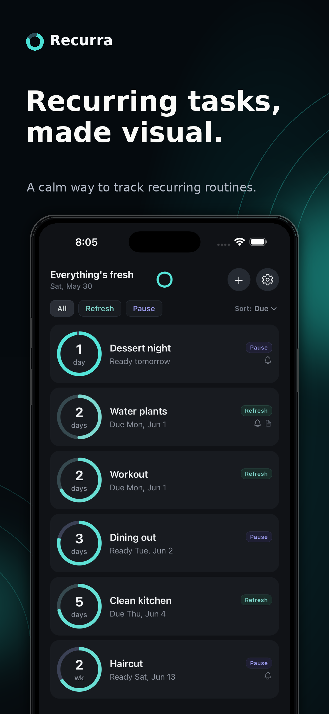
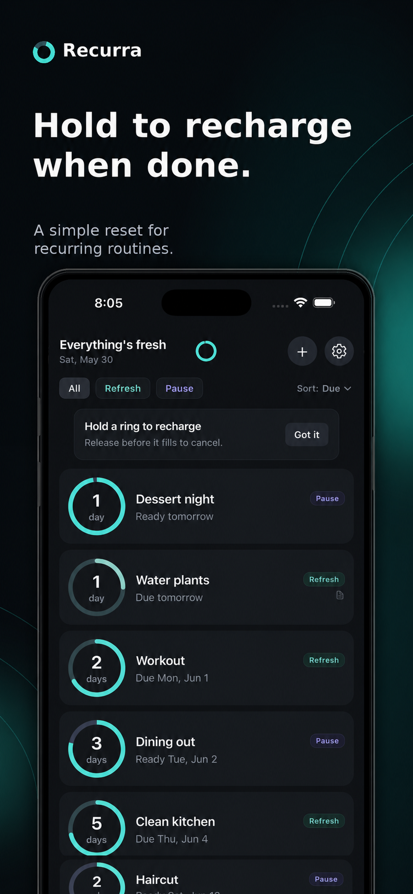
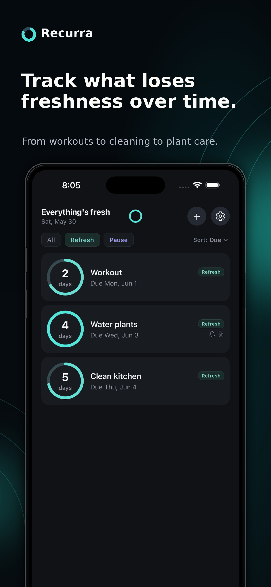
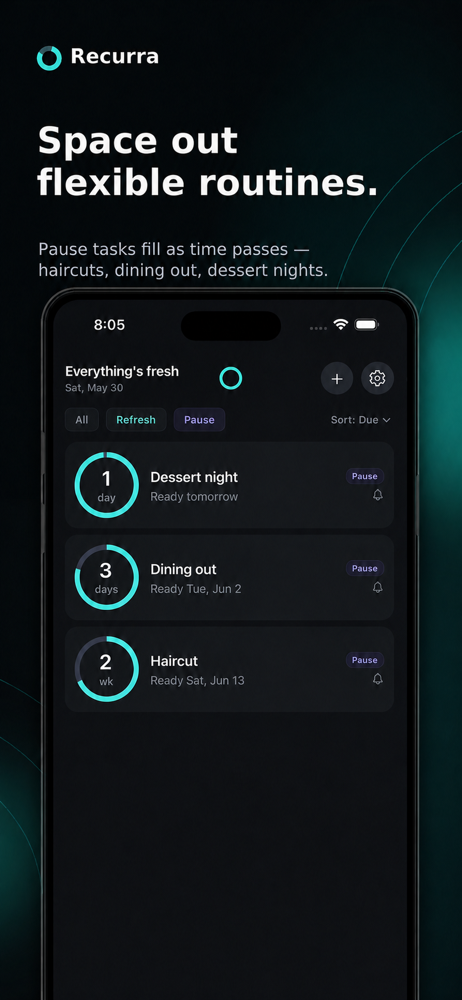
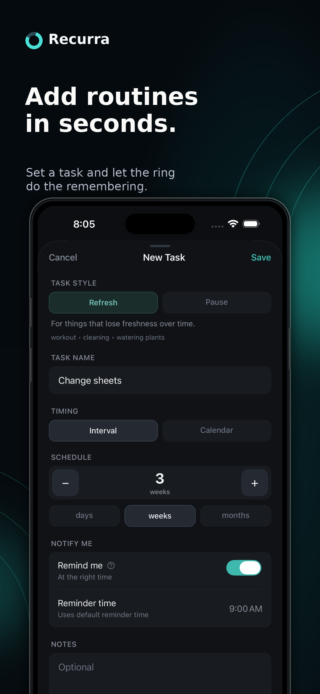
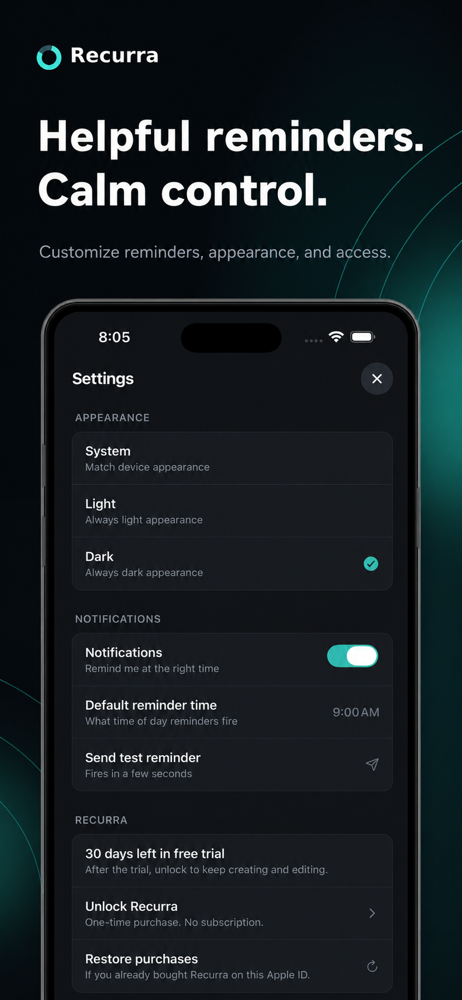

Recurring routines, made visual.
A calm iPhone app for tracking the recurring upkeep of your life — workouts, plants, cleaning, haircuts, dining out. Hold the ring to recharge. Local, private, one-time purchase.






How it works
Each task is a charge ring. Refresh tasks drain over time — when the ring runs low, it's time to do them again. Pause tasks fill over time — the longer you wait, the closer they get to ready.
Press and hold the ring to recharge a task. That's the whole gesture.
Private by design
Your tasks and reminders are stored on your device. There's no account, no cloud, no analytics, and no tracking. Recurra is built to stay out of the way.
Pay once, keep it forever
Try Recurra free for 30 days. After that, a single one-time purchase unlocks everything. No subscription, no auto-renewal, no tiers. Restore on any device signed into the same Apple ID.
Privacy Policy — how Recurra handles (and doesn't handle) your data.
Support & FAQ — get help, learn how the app works, restore purchases, and contact us.